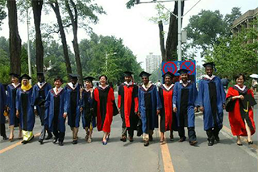
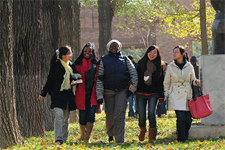
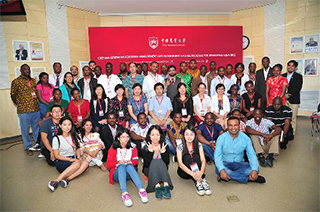

Brief Introduction of Overseas
Students' Programs
The College of Humanities and Development was established in 2002. It is a combination of the former College of Humanities and Social Sciences and the Institute of Rural Development. The College has a Department of Development and Management, a Department of Sociology, a Department of Law, a Department of Media Communication and a Department of Foreign languages. Rural regional development, sociology, law, communication, English and other five undergraduate enrollment major. 2010, rural regional development major opened international development experimental class.
Since 2008, with the support of China Scholarship Council and the Ministry of Commerce of China, the College of Humanities and Development Studies started the International Master and Doctor Program on “International Development Studies”. This program equips the students with the international perspectives and the advanced approaches to development research and management, and knowledge on China’s development models and experiences, and educates high-end and inter-disciplinary talent working in the applied and research fields. This program integrates the theories with practices, integrates teaching with the practices, builds up a student-friendly environment and provides students with the opportunities of practices, and encourages the independent and innovative thinking.
By the end of 2015, this program has recruited 133 international students (48 doctoral students and 85 Master students), from 43 different countries. Most of them are from developing countries. Twenty-three students have got Doctor Degrees and 44 have got Master Degrees. These international students are working in governments, universities, scientific research institutes, and non-profit organizations after they went back to their homeland. They have become the backbones of their organizations and this program has generated good social impact.
By the end of 2015, this program has recruited 133 international students (48 doctoral students and 85 Master students), from 43 different countries. Most of them are from developing countries. Twenty-three students have got Doctor Degrees and 44 have got Master Degrees. These international students are working in governments, universities, scientific research institutes, and non-profit organizations after they went back to their homeland. They have become the backbones of their organizations and this program has generated good social impact.


